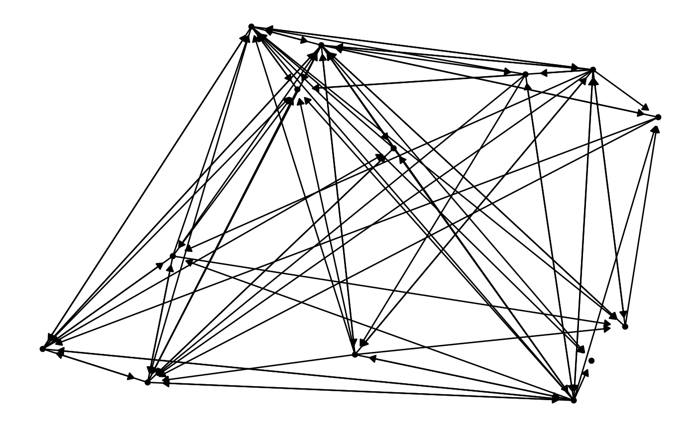

See the vignette at https://briatte.github.io/ggnetwork/ for a
description of both this function and the rest of the ggnetwork
package.
# S3 method for network fortify( model, data = NULL, layout = "fruchtermanreingold", weights = NULL, arrow.gap = ifelse(network::is.directed(model), 0.025, 0), by = NULL, scale = TRUE, stringsAsFactors = getOption("stringsAsFactors"), ... )
| model | an object of class |
|---|---|
| data | not used by this method. |
| layout | a network layout supplied by |
| weights | the name of an edge attribute to use as edge weights when
computing the network layout, if the layout supports such weights (see
'Details').
Defaults to |
| arrow.gap | a parameter that will shorten the network edges in order to
avoid overplotting edge arrows and nodes; defaults to |
| by | a character vector that matches an edge attribute, which will be
used to generate a data frame that can be plotted with
|
| scale | whether to (re)scale the layout coordinates. Defaults to
|
| stringsAsFactors | whether vertex and edge attributes should be
converted to factors if they are of class |
| ... | additional parameters for the |
a data.frame object.
fortify.network will return a warning if it finds duplicated
edges after converting the network to an edge list. Duplicated edges should
be eliminated in favour of single weighted edges before using a network
layout that supports edge weights, such as the Kamada-Kawai force-directed
placement algorithm.
if (require(ggplot2) && require(network)) { # source: ?network::flo data(flo) # data example ggnetwork(flo) # plot example ggplot(ggnetwork(flo), aes(x, y, xend = xend, yend = yend)) + geom_edges(alpha = 0.5) + geom_nodes(size = 12, color = "white") + geom_nodetext(aes(label = vertex.names), fontface = "bold") + theme_blank() # source: ?network::emon data(emon) # data example ggnetwork(emon[[1]], layout = "target", niter = 100) # data example with edge weights ggnetwork(emon[[1]], layout = "kamadakawai", weights = "Frequency") # plot example with straight edges ggplot( ggnetwork(emon[[1]], layout = "kamadakawai", arrow.gap = 0.025), aes(x, y, xend = xend, yend = yend) ) + geom_edges(aes(color = Frequency), arrow = arrow(length = unit(10, "pt"), type = "closed") ) + geom_nodes(aes(size = Formalization)) + scale_color_gradient(low = "grey50", high = "tomato") + scale_size_area(breaks = 1:3) + theme_blank() # plot example with curved edges ggplot( ggnetwork(emon[[1]], layout = "kamadakawai", arrow.gap = 0.025), aes(x, y, xend = xend, yend = yend) ) + geom_edges(aes(color = Frequency), curvature = 0.1, arrow = arrow(length = unit(10, "pt"), type = "open") ) + geom_nodes(aes(size = Formalization)) + scale_color_gradient(low = "grey50", high = "tomato") + scale_size_area(breaks = 1:3) + theme_blank() # facet by edge attribute ggplot( ggnetwork(emon[[1]], arrow.gap = 0.02, by = "Frequency"), aes(x, y, xend = xend, yend = yend) ) + geom_edges(arrow = arrow(length = unit(5, "pt"), type = "closed")) + geom_nodes() + theme_blank() + facet_grid(. ~ Frequency, labeller = label_both) # user-provided layout ggplot( ggnetwork(emon[[1]], layout = matrix(runif(28), ncol = 2)), aes(x, y, xend = xend, yend = yend) ) + geom_edges(arrow = arrow(length = unit(5, "pt"), type = "closed")) + geom_nodes() + theme_blank() }#>#> #> #> #> #>